السلسلة 70
السيارة (صنف B) · 40 سؤال بالصوت. حاول تجاوب بوحدك، من بعد شوف الجواب.
السؤال 1
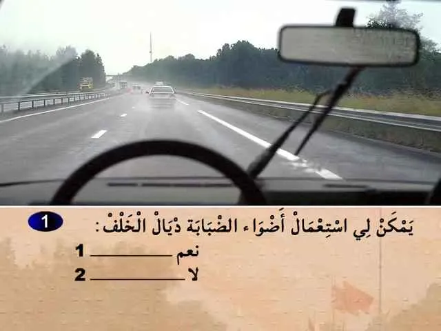
بيّن الجواب
الجواب الصحيح: 2
فاش كيطيح الشتا كنستعملو الضو ديال التقابل وضو الضباب القدامي ماشي الخلفي، يعني مايمكنش نستعمل الضو ديال الضباب الخلفي.
السؤال 2
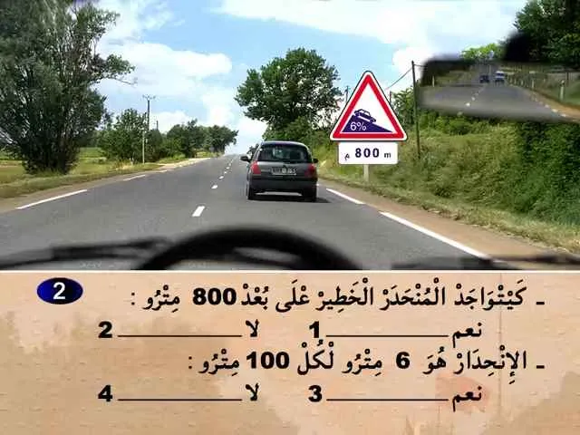
بيّن الجواب
الجواب الصحيح: 1 و 3
العلامة الطرقيّة كتعني خطر منحدر حاد ومعاها علامة تكميلية كتقول بلي راه على بعد 800 متر، ونسبة الانحدار هي 6% يعني 6 مترفكل 100 متر.
السؤال 3
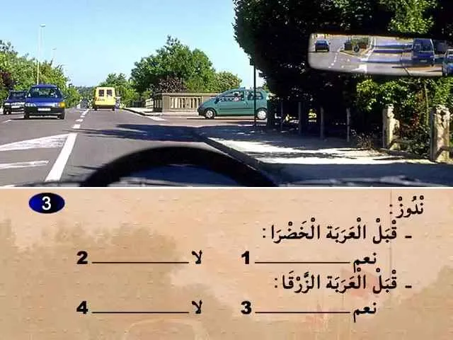
بيّن الجواب
الجواب الصحيح: 1 و 3
حنا فملتقى الطرق، الأسبقية للسيارات اللي جايين من اليمين، ولكن فهذ الحالة السيارة الخضرا عندها علامة قف (الخط المرسوم على الأرض) يعني ما نعطيهاش حق الأسبقية، والسيارة الزرقا على ليساري ما نعطيهاش حق الأسبقية كذلك. فهذ الحالة أنا نمر قبل السيارة الخضرا والزرقا.
السؤال 4
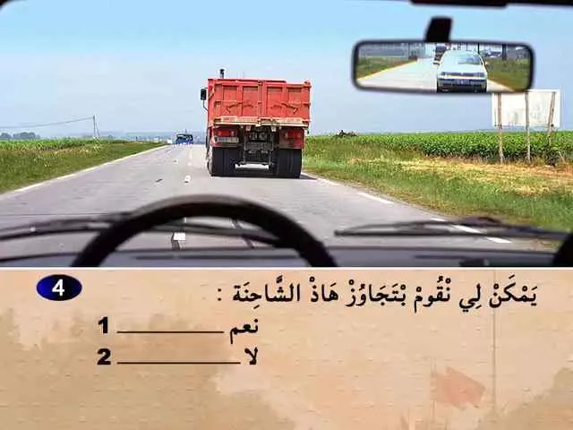
بيّن الجواب
الجواب الصحيح: 2
حنا فبداية عقبة، الرؤية ما واضحاش، وكاين سيارة جاية فالاتجاه المعاكس، يعني مايمكنش نتجاوز الشاحنة.
السؤال 5
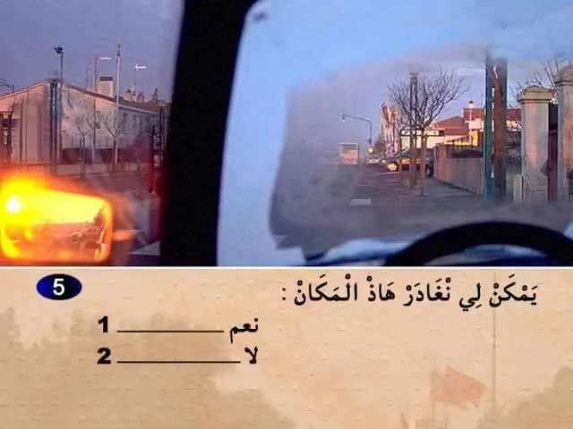
بيّن الجواب
الجواب الصحيح: 2
الرؤية ما واضحاش ما نقدرش نعرف واش كاين شي سيارة جاية من ورايا، فهذ الحالة ما يمكنش نغادر.
السؤال 6
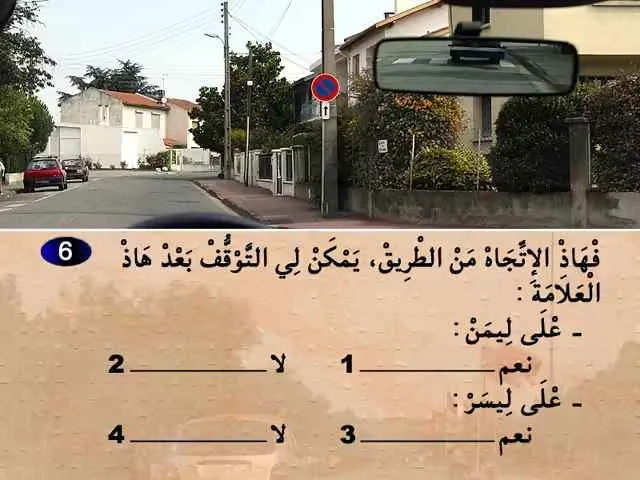
بيّن الجواب
الجواب الصحيح: 2 و 4
العلامة الطرقيّة كتمنع الوقوف، مايمكنش نوقف على اليمين ولا على اليسار حيث الطريق بجوج اتجاهات والوقوف ممنوع على الجهة اليسرى.
السؤال 7
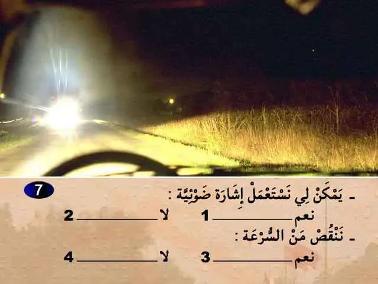
بيّن الجواب
الجواب الصحيح: 1 و 3
يمكننا ننبهو السيارة الجاية بالإشارة الضوئية باش يبدل الضو اللي غادي بيه، وأفضل فالليل ننقص السرعة عند التقابل.
السؤال 8
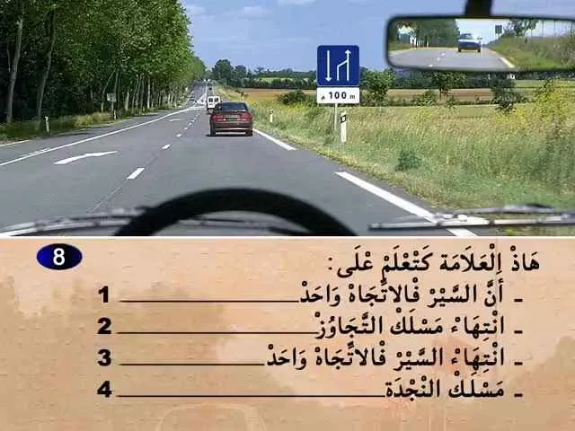
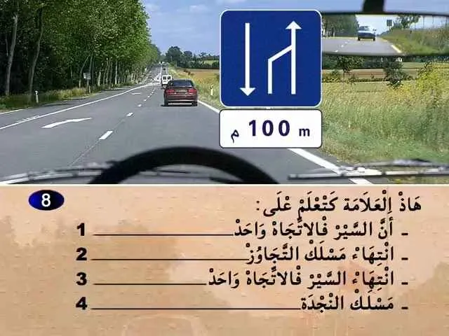
بيّن الجواب
الجواب الصحيح: 2
العلامة الطرقيّة كتعني نهاية مسلك التجاوز على بعد 100 متر.
السؤال 9
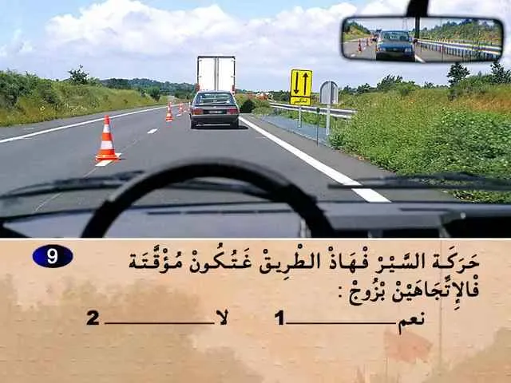
بيّن الجواب
الجواب الصحيح: 1
العلامة الطرقيّة الصفراء كتعني بلي الطريق غادي تكون فالاتجاهين بشكل مؤقت.
السؤال 10
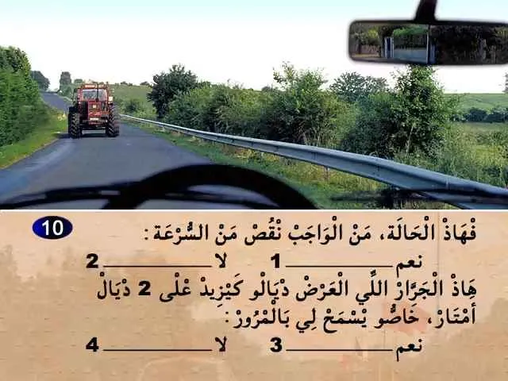
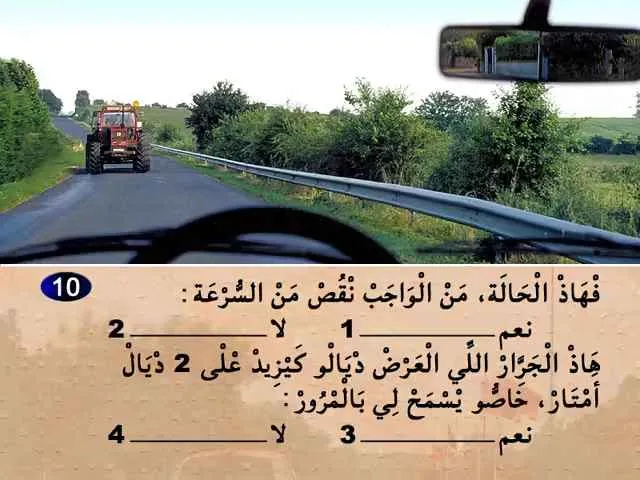
بيّن الجواب
الجواب الصحيح: 1 و 3
خاصني ننقص السرعة حيث الجرار كيتمشى ببطء وخاصو يعطيني الطريق باش ما يعرقلش السير.
السؤال 11
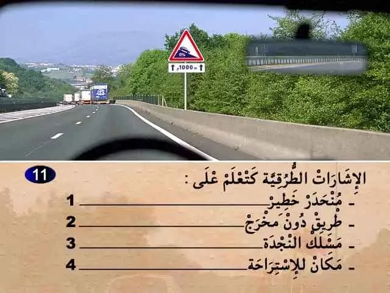
بيّن الجواب
الجواب الصحيح: 1
العلامة الطرقيّة كتعني خطر منحدر حاد على بعد 1000 متر.
السؤال 12
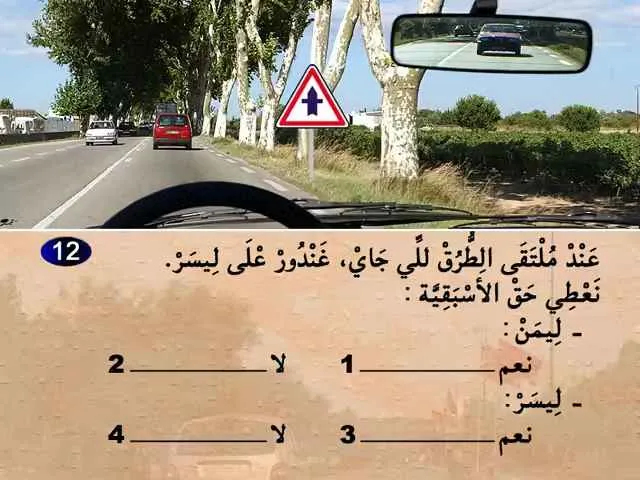
بيّن الجواب
الجواب الصحيح: 2 و 4
العلامة الطرقيّة كتعني عندي حق الأسبقية فالملتقى الطرق الجاي، إذا ما نعطيش الأسبقية للعربات الجاية من اليمين واليسار.
السؤال 13
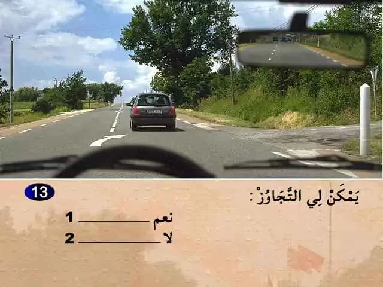
بيّن الجواب
الجواب الصحيح: 2
الأسهم المرسومة على الأرض كتلزمني على الانحياز لليمين، يعني مايمكنش نتجاوز.
السؤال 14
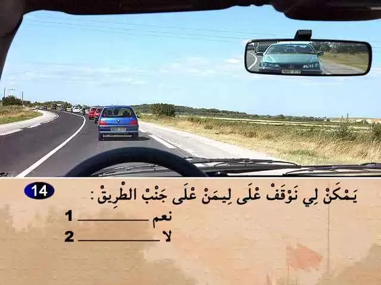
بيّن الجواب
الجواب الصحيح: 1
يمكنني نوقف على اليمين فجنب الطريق، ما كايناش علامة طرقيّة كتمنعني، وكاينة مسافة كافية.
السؤال 15
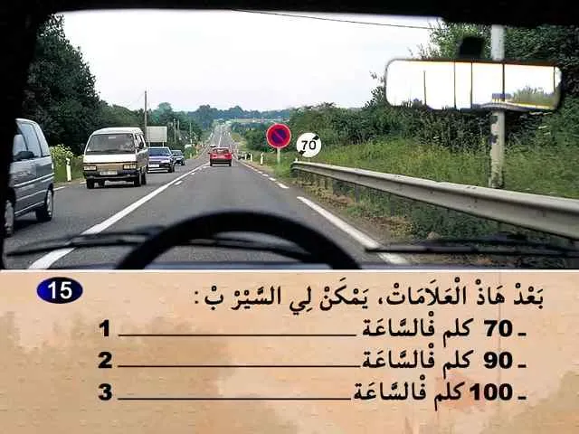
بيّن الجواب
الجواب الصحيح: 1 و 2 و 3
العلامة الطرقيّة كتعني نهاية المنع، و فالطريق الوطنية السرعة محدودة ف 100 كلم/س، يعني يمكنني نمشي ب 70 كلم/س، 90 كلم/س، أو 100 كلم/س.
السؤال 16
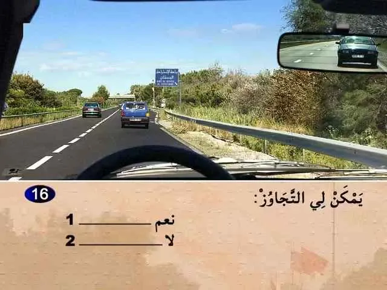
بيّن الجواب
الجواب الصحيح: 1
حنا فالطريق السيار، الخط المتصل على اليسار يعني الطريق فجهة وحدة، والخط المتقطع كيسمحلي بالتجاوز، وما كايناش سيارة من ورايا غادي تتجاوزني.
السؤال 17
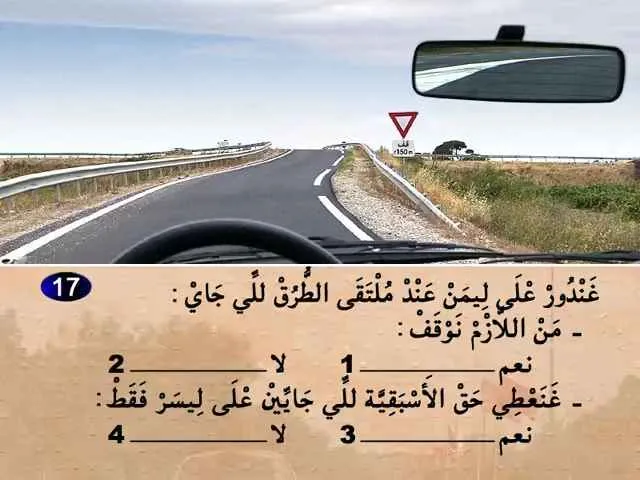
بيّن الجواب
الجواب الصحيح: 1 و 4
العلامة الطرقيّة كتقول ما عنديش حق الأسبقية ومعاها علامة (قف) كتجبرني نوقف فالملتقى الطرق الجاي ونعطي الأسبقية للعربات الجاية من اليمين واليسار.
السؤال 18
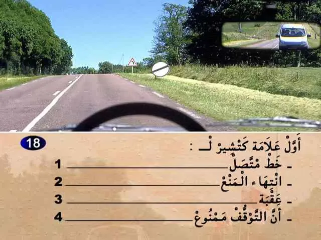
بيّن الجواب
الجواب الصحيح: 2
العلامة الطرقيّة كتعني نهاية المنع.
السؤال 19
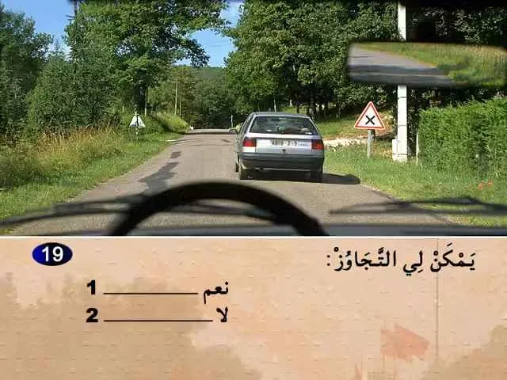
بيّن الجواب
الجواب الصحيح: 2
مايمكنش نتجاوز حيث العلامة الطرقيّة كتعني وجود ملتقى الطرق وما عنديش حق الأسبقية.
السؤال 20
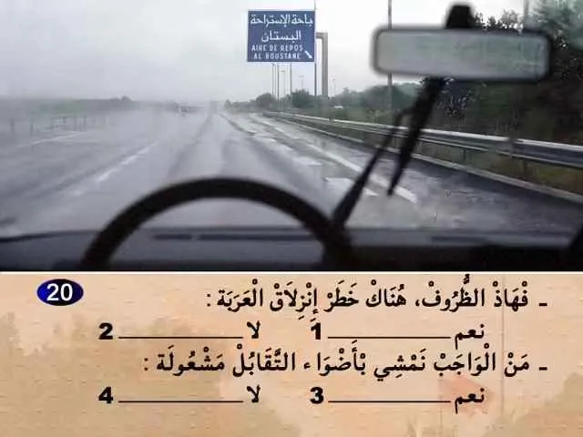
بيّن الجواب
الجواب الصحيح: 1 و 3
فالشتا والأرض مبللة كاين خطر الانزلاق، ولازم نسير بالضو ديال التقابل.
السؤال 21
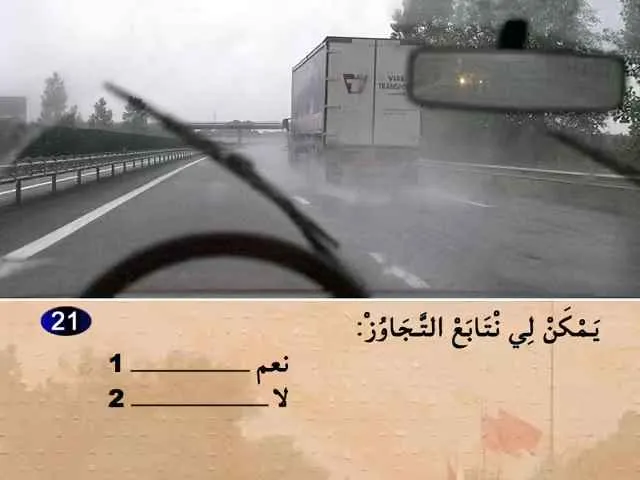
بيّن الجواب
الجواب الصحيح: 1
الخط المتصل على اقصى اليسار كيعني حنا فالطريق السيار والخط المتقطع كيسمح بالتجاوز.
السؤال 22
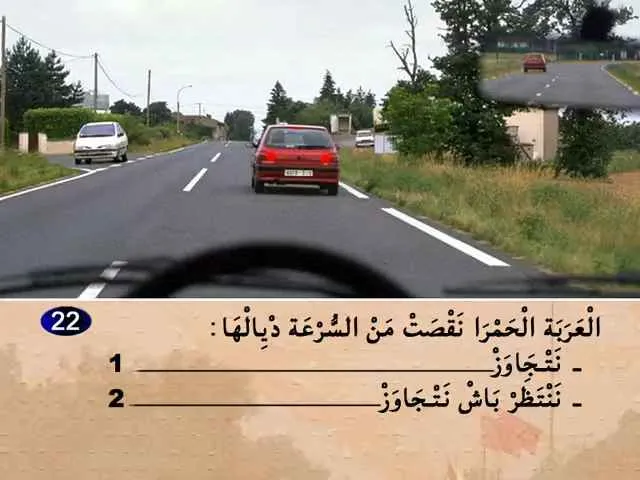
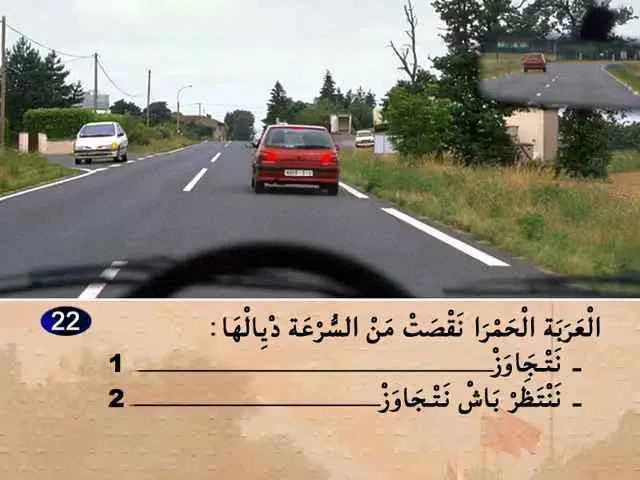
بيّن الجواب
الجواب الصحيح: 2
خاصني ننتظر باش نتجاوز حيث السيارة البيضا غادي تندمج فالمسلك ديالها.
السؤال 23
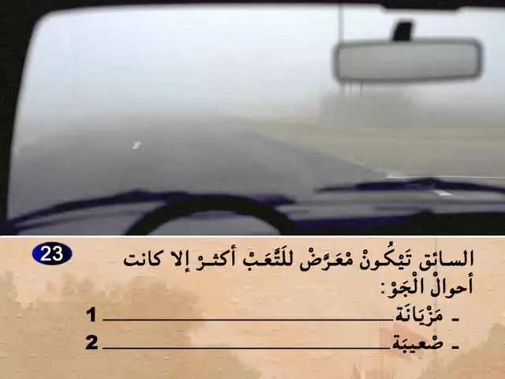
بيّن الجواب
الجواب الصحيح: 2
فالأحوال الجوية الجيدة السائق ما معرضش للتعب، لكن فالظروف الخايبة كيكون معرض للتعب حيث خاصو يدير مجهود باش ينتبه.
السؤال 24
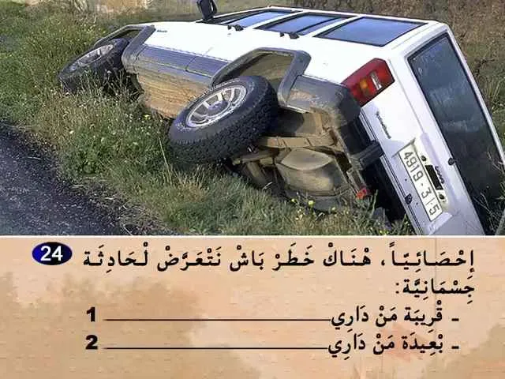
بيّن الجواب
الجواب الصحيح: 1
قريبة من داري كتعني داخل المدينة وبعيدة كتعني خارج المدينة، والإحصائيات كتشير أن الحوادث كتر داخل المدينة.
السؤال 25
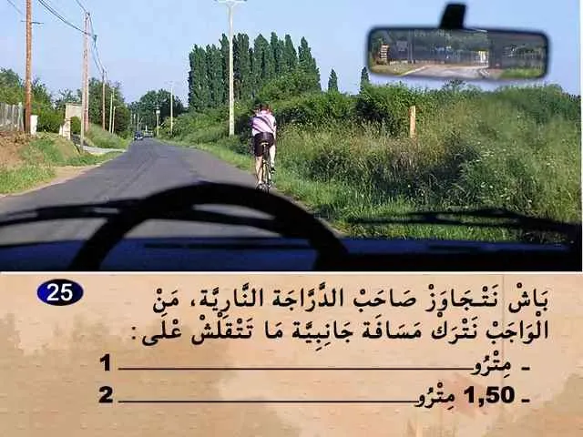
بيّن الجواب
الجواب الصحيح: 1
خارج المدينة خاصني نخلي مسافة جانبية على الأقل متر ونص باش نتجاوز صاحب الدراجة، فالطريق الضيقة خاصني نخلي متر واحد.
السؤال 26
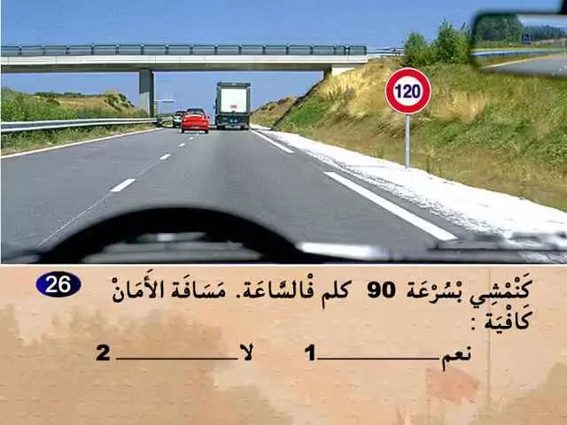
بيّن الجواب
الجواب الصحيح: 1
لحساب مسافة الأمان خاصني نضرب العدد العشري ديال السرعة ديالي في 6، في هذه الحالة 9 ضرب 6 = 54 متر، وبما ان في الطريق كل خط على اليمين كيمثل 20 متر و كل فراغ كيمثل 5 متر، يعني كاينة مسافة 55 إلى 60 متر بيني و بين العربة قدامي، يعني المسافة كافية.
السؤال 27
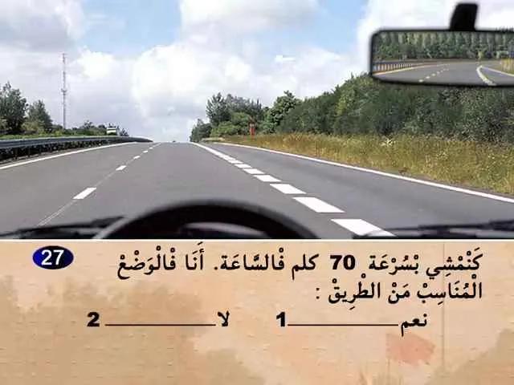
بيّن الجواب
الجواب الصحيح: 1
حنا فالمسلك الصحيح ديال الطريق، المسلك اللي على اليسار خاص بالاندماج.
السؤال 28
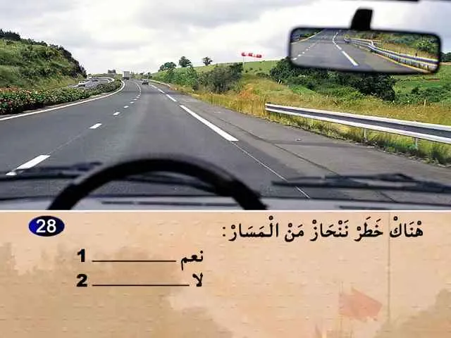
بيّن الجواب
الجواب الصحيح: 1
كاين خطر الانحياز حيث منعرج و كاين خطر الرياح كما كتشير العلامة.
السؤال 29
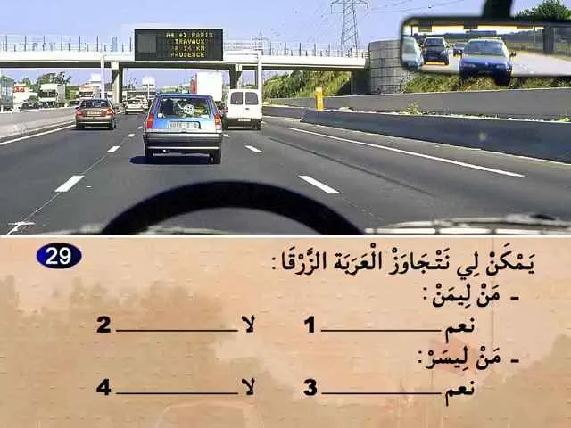
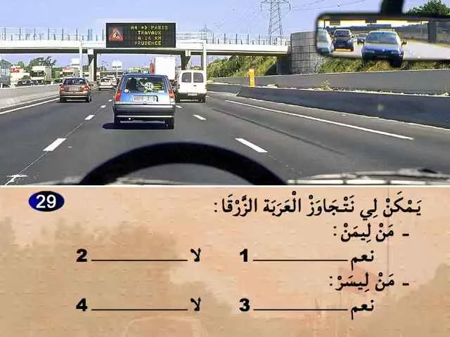
بيّن الجواب
الجواب الصحيح: 2 و 4
مايمكنش نتجاوز من اليمين، ومن اليسار الخط المتقطع كيسمح لي ولكن حيت كين الزحام من الأفضل ننتظر.
السؤال 30
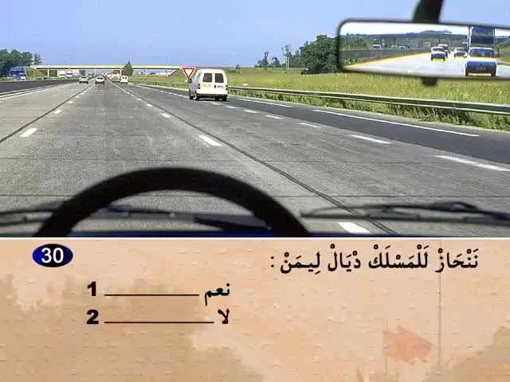
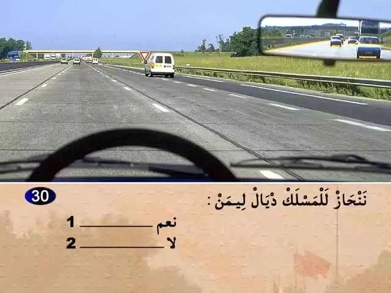
بيّن الجواب
الجواب الصحيح: 2
ما كايناش علامة كتجبرني ننحاز لليمين، وأنا أصلا بديت عملية نتجاوز السيارة البيضا، و السيارات يقدرو اتجاوزوني حيت فالطريق السيار يمكن عدة سيارات يديرو عملية التجاوز مرة واحدة.
السؤال 31
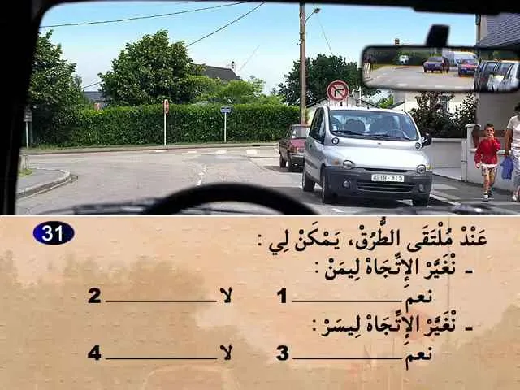
بيّن الجواب
الجواب الصحيح: 2 و 3
فملتقى الطرق الجاي مايمكنش ننعطف لليمين حيث كاينة علامة كتمنعني، لكن لليسار يمكن حيث ما كايناش علامة كتمنعني.
السؤال 32
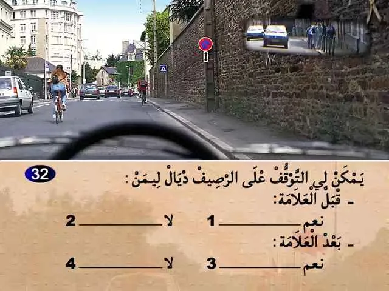
بيّن الجواب
الجواب الصحيح: 2 و 4
العلامة الطرقيّة كتمنعني من الوقوف على الرصيف الأيمن قبل وبعد العلامة.
السؤال 33
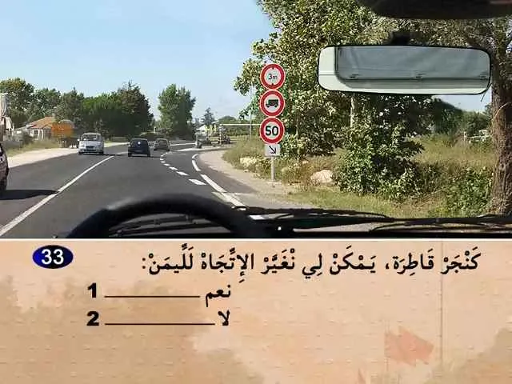
بيّن الجواب
الجواب الصحيح: 1
العلامات الطرقيّة كتمنع الشاحنات والعربات اللي ارتفاعها 3 أمتار، لكن ما كتمنعش السيارات اللي عندها قاطرة.
السؤال 34
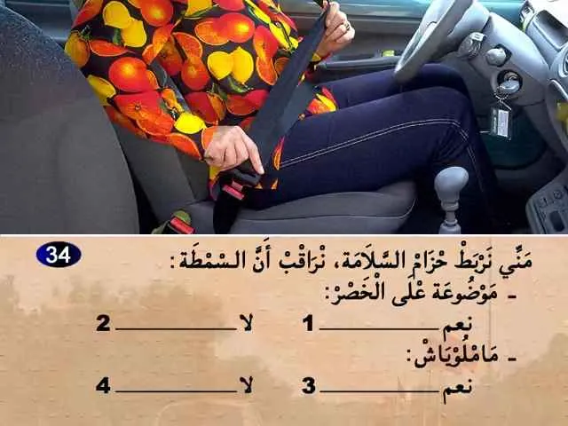
بيّن الجواب
الجواب الصحيح: 1 و 3
عند ربط حزام السلامة خاصني نتأكد أنه مربوط بشكل مزيان يعني ماملتويش و داير على الخصر ديالي.
السؤال 35
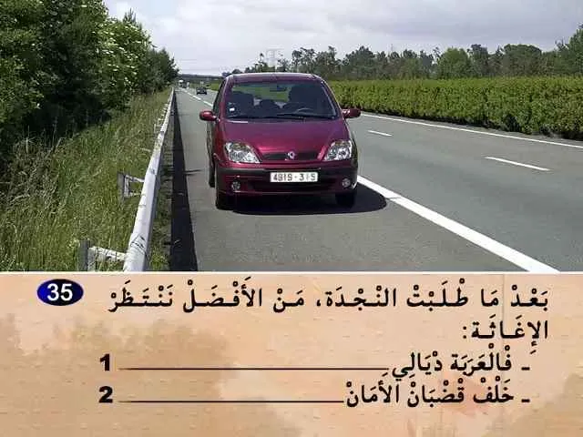
بيّن الجواب
الجواب الصحيح: 2
بعد طلب النجدة من الأفضل ننتظر خلف قضبان الأمان.
السؤال 36
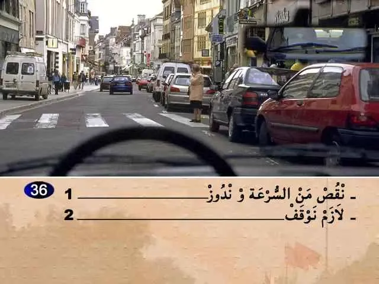
بيّن الجواب
الجواب الصحيح: 2
عند اندماج الراجلين في ممر الراجلين خاصني نوقف ونعطيهم حق الأسبقية.
السؤال 37
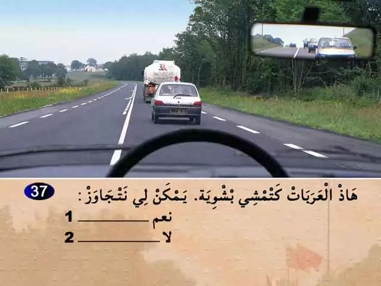
بيّن الجواب
الجواب الصحيح: 2
الخط المتصل على الأرض كيعني ممنوع التجاوز.
السؤال 38
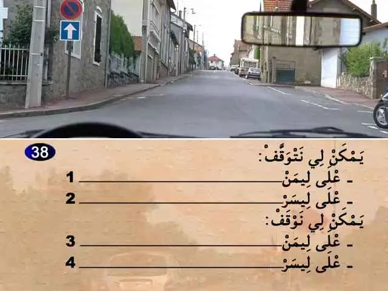
بيّن الجواب
الجواب الصحيح: 1 و 3 و 4
الطريق ذات اتجاه واحد، والعلامة الطرقيّة كتمنع التوقف على الجهة اليسرى فقط.
السؤال 39
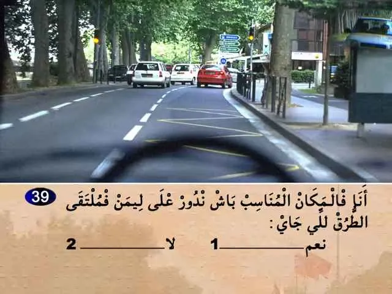
بيّن الجواب
الجواب الصحيح: 1
هذا المكان خاص بالحافلات وممنوع الوقوف أو التوقف فيه، ولكن يمكن استعماله للانعطاف لليمين بشرط نكون متأكد انه ماكاينش عائق لي غيحتم عليا نوقف فمكان الحافلات.
السؤال 40
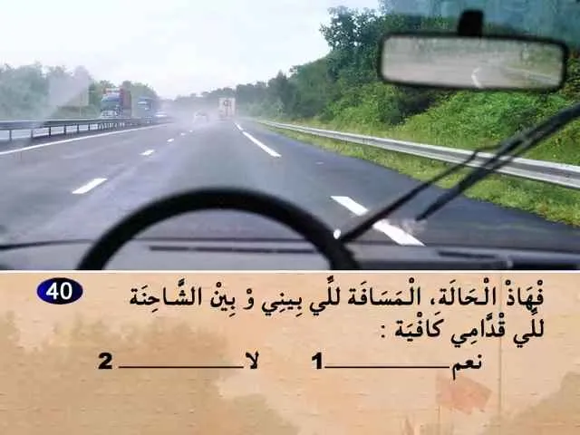
بيّن الجواب
الجواب الصحيح: 1
فالشتا مسافة الأمان خاصها تكون أطول، والمسافة اللي بيني وبين الشاحنة كافية حيث ما يمكننيش نقرا لوحة الترقيم ديالها.